如何使用Git上传项目代码到github
github是一个基于git的代码托管平台，付费用户可以建私人仓库，我们一般的免费用户只能使用公共仓库，也就是代码要公开。这对于一般人来说公共仓库就已经足够了。
注册账户以及创建仓库
要想使用github第一步当然是注册github账号了。之后就可以创建仓库了（免费用户只能建公共仓库），Create a New Repository，填好名称后Create，之后会出现一些仓库的配置信息，这也是一个git的简单教程。步骤如下：
打开https://github.com 直接在首页上注册
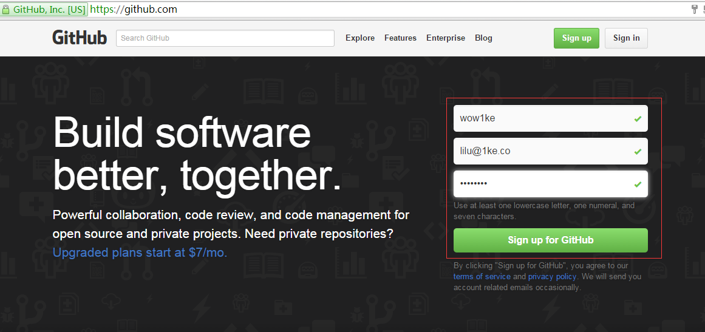
点按钮注册成功之后，在页面上方用户菜单上选择 “+”->New repository 创建一个新的仓库
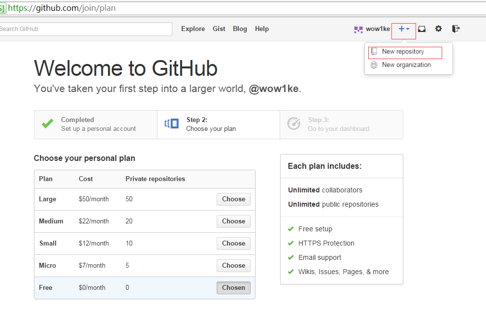
为仓库取一个名字，点击创建仓库按钮 你将成功创建一个仓库
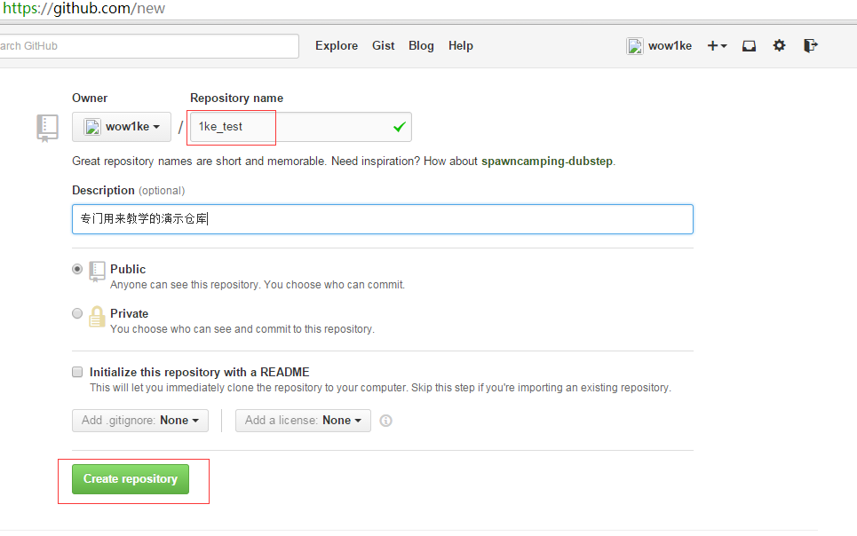
安装git客户端
github是服务端，要想在自己电脑上使用git我们还需要一个git客户端，
windows用户请下载 http://msysgit.github.com/
mac用户请下载 http://code.google.com/p/tortoisegit/
一路next，安装成功后， 回到C盘，或任何文件夹下，点鼠标右键会多出一些菜单
如 Git Init Hear、Git Bash、Git Gui ， 说明安装成功。
配置Git
我们先在电脑硬盘里找一块地方存放本地仓库，比如我们把本地仓库建立在C:\MyRepository\1ke_test文件夹下
进入1ke_test文件夹 鼠标右键操作如下步骤：
1）在本地仓库里右键选择Git Init Here，会多出来一个.git文件夹，这就表示本地git创建成功。右键Git Bash进入git命令行，截图效果如下：
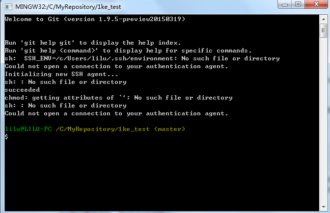
第一次在本地仓库操作需要先执行git init命令
$ git init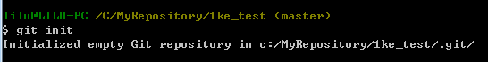
为了把本地的仓库传到github，还需要配置ssh key。
2）在本地创建ssh key
$ ssh-keygen -t rsa -C "your_email@youremail.com"后面的your_email@youremail.com改为你的邮箱。我的邮箱是lilu@1ke.co，也是在github上注册的那个邮箱：
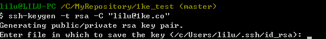
直接点回车，说明会在默认文件id_rsa上生成ssh key。
然后系统要求输入密码，直接按回车表示不设密码
重复密码时也是直接回车，之后提示你shh key已经生成成功。
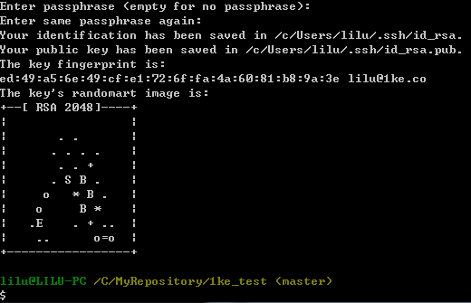
然后我们进入提示的地址下查看ssh key文件。 我的电脑的地址是C:\Users\lilu\.ssh ，其中lilu是我的电脑的名称
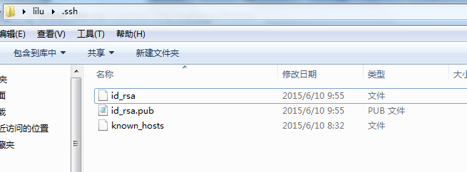
打开id_rsa.pub，复制里面的key。里面的key是一对看不懂的字符数字组合，不用管它，直接复制。
回到github网站，进入Account Settings，左边选择SSH Keys，Add SSH Key,
title随便填，粘贴key。
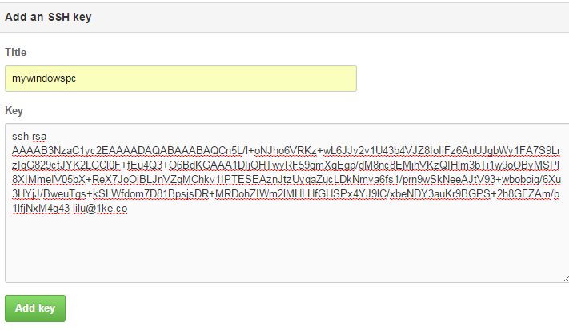
3）验证是否成功，在git bash下输入
$ ssh -T git@github.com回车就会看到：You’ve successfully authenticated, but GitHub does not provide shell access 。这就表示已成功连上github。
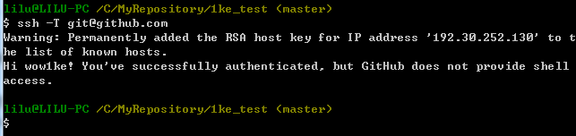
4）接下来我们要做的就是把本地仓库传到github上去，在此之前还需要设置username和email，因为github每次commit都会记录他们
$ git config --global user.name "your name"
$ git config --global user.email "your_email@youremail.com"分别输入上述命令行 回车， 我的界面显示如下
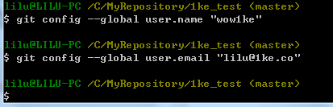
5）进入要上传的仓库，右键git bash，添加远程地址
$ git remote add origin git@github.com:yourName/yourRepo.git后面的yourName和yourRepo表示你再github的用户名和刚才新建的仓库，加完之后进入.git，打开config，这里会多出一个remote “origin”内容，这就是刚才添加的远程地址，也可以直接修改config来配置远程地址。
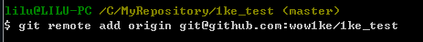
与github上的对应
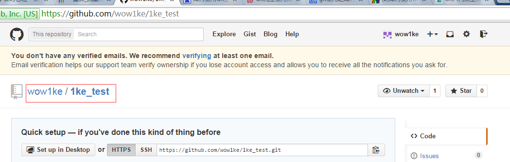
提交上传
1）接下来在本地仓库里添加一些文件，比如README
在本地新建一个README文件
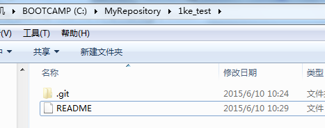
然后在命令行输入一下命令
$ git add README
$ git commit -m "first commit"我的执行界面如下
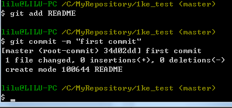
2）上传到github
$ git push origin mastergit push命令会将本地仓库推送到远程服务器。
git pull命令则相反。
注：首次提交，先git pull下，修改完代码后，使用git status可以查看文件的差别，使用git add 添加要commit的文件。
大功告成，现在你知道如何将本地的项目提交到github上了。
gitignore文件
.gitignore顾名思义就是告诉git需要忽略的文件，这是一个很重要并且很实用的文件。一般我们写完代码后会执行编译、调试等操作，这期间会产生很多中间文件和可执行文件，这些都不是代码文件，是不需要git来管理的。我们在git status的时候会看到很多这样的文件，如果用git add -A来添加的话会把他们都加进去，而手动一个个添加的话也太麻烦了。这时我们就需要.gitignore了。
Git命令
查看、添加、提交、删除、找回，重置修改文件
git help <command> # 显示command的help
git show # 显示某次提交的内容 git show $id
git co -- <file> # 抛弃工作区修改
git co . # 抛弃工作区修改
git add <file> # 将工作文件修改提交到本地暂存区
git add . # 将所有修改过的工作文件提交暂存区
git rm <file> # 从版本库中删除文件
git rm <file> --cached # 从版本库中删除文件，但不删除文件
git reset <file> # 从暂存区恢复到工作文件
git reset -- . # 从暂存区恢复到工作文件
git reset --hard # 恢复最近一次提交过的状态，即放弃上次提交后的所有本次修改
git ci <file> git ci . git ci -a # 将git add, git rm和git ci等操作都合并在一起做 git ci -am "some comments"
git ci --amend # 修改最后一次提交记录
git revert <$id> # 恢复某次提交的状态，恢复动作本身也创建次提交对象
git revert HEAD # 恢复最后一次提交的状态
查看文件diff
git diff <file> # 比较当前文件和暂存区文件差异 git diff
git diff <id1><id2> # 比较两次提交之间的差异
git diff <branch1>..<branch2> # 在两个分支之间比较
git diff --staged # 比较暂存区和版本库差异
git diff --cached # 比较暂存区和版本库差异
git diff --stat # 仅仅比较统计信息
查看提交记录
git log git log <file> # 查看该文件每次提交记录
git log -p <file> # 查看每次详细修改内容的diff
git log -p -2 # 查看最近两次详细修改内容的diff
git log --stat #查看提交统计信息
tig
Mac上可以使用tig代替diff和log，brew install tig
Git 本地分支管理
查看、切换、创建和删除分支
git br -r # 查看远程分支
git br <new_branch> # 创建新的分支
git br -v # 查看各个分支最后提交信息
git br --merged # 查看已经被合并到当前分支的分支
git br --no-merged # 查看尚未被合并到当前分支的分支
git co <branch> # 切换到某个分支
git co -b <new_branch> # 创建新的分支，并且切换过去
git co -b <new_branch> <branch> # 基于branch创建新的new_branch
git co $id # 把某次历史提交记录checkout出来，但无分支信息，切换到其他分支会自动删除
git co $id -b <new_branch> # 把某次历史提交记录checkout出来，创建成一个分支
git br -d <branch> # 删除某个分支
git br -D <branch> # 强制删除某个分支 (未被合并的分支被删除的时候需要强制)
分支合并和rebase
git merge <branch> # 将branch分支合并到当前分支
git merge origin/master --no-ff # 不要Fast-Foward合并，这样可以生成merge提交
git rebase master <branch> # 将master rebase到branch，相当于： git co <branch> && git rebase master && git co master && git merge <branch>
Git补丁管理(方便在多台机器上开发同步时用)
git diff > ../sync.patch # 生成补丁
git apply ../sync.patch # 打补丁
git apply --check ../sync.patch #测试补丁能否成功
Git暂存管理
git stash # 暂存
git stash list # 列所有stash
git stash apply # 恢复暂存的内容
git stash drop # 删除暂存区
Git远程分支管理
git pull # 抓取远程仓库所有分支更新并合并到本地
git pull --no-ff # 抓取远程仓库所有分支更新并合并到本地，不要快进合并
git fetch origin # 抓取远程仓库更新
git merge origin/master # 将远程主分支合并到本地当前分支
git co --track origin/branch # 跟踪某个远程分支创建相应的本地分支
git co -b <local_branch> origin/<remote_branch> # 基于远程分支创建本地分支，功能同上
git push # push所有分支
git push origin master # 将本地主分支推到远程主分支
git push -u origin master # 将本地主分支推到远程(如无远程主分支则创建，用于初始化远程仓库)
git push origin <local_branch> # 创建远程分支， origin是远程仓库名
git push origin <local_branch>:<remote_branch> # 创建远程分支
git push origin :<remote_branch> #先删除本地分支(git br -d <branch>)，然后再push删除远程分支
Git远程仓库管理
git remote -v # 查看远程服务器地址和仓库名称
git remote show origin # 查看远程服务器仓库状态
git remote add origin git@ github:robbin/robbin_site.git # 添加远程仓库地址
git remote set-url origin git@ github.com:robbin/robbin_site.git # 设置远程仓库地址(用于修改远程仓库地址) git remote rm <repository> # 删除远程仓库
创建远程仓库
git clone --bare robbin_site robbin_site.git # 用带版本的项目创建纯版本仓库
scp -r my_project.git git@ git.csdn.net:~ # 将纯仓库上传到服务器上
mkdir robbin_site.git && cd robbin_site.git && git --bare init # 在服务器创建纯仓库
git remote add origin git@ github.com:robbin/robbin_site.git # 设置远程仓库地址
git push -u origin master # 客户端首次提交
git push -u origin develop # 首次将本地develop分支提交到远程develop分支，并且track
git remote set-head origin master # 设置远程仓库的HEAD指向master分支
也可以命令设置跟踪远程库和本地库
git branch --set-upstream master origin/master
git branch --set-upstream develop origin/develop